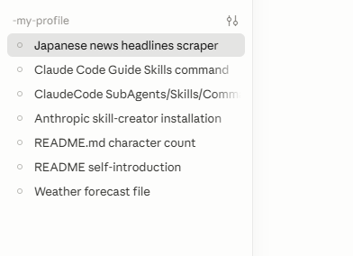

エージェント・自動化・スキル開発まで、
Claude Code を使って実際に構築したプロジェクトをまとめています。
Claude Code との対話だけで構築した、自動化・エージェント・ドキュメントツールの実績です。

日本語ニュースのヘッドラインを自動収集するスクレイパー。RSS・WebページからAIが情報を整理し、定期実行で情報収集を完全自動化。
天気予報APIを取得してMarkdownファイルに整形・保存する自動化ツール。毎日の天気をワンコマンドで記録。
Claude Code の使い方をガイドするカスタムスキルコマンド。よく使う操作をワンコマンドに集約。
サブエージェントとスキルを活用したマルチエージェント構成。複雑なタスクを自動的に分解・委譲する仕組みを構築。
Anthropic 公式 skill-creator のセットアップと動作検証。独自スキルの開発基盤を一から構築。
Markdown ファイルの文字数を改行・スペース有無の4パターンでカウントするユーティリティ。
AI 開発者としての自己紹介 README の作成。GitHub プロフィールを整備し、実績を可視化。
Claude Code を使いながら、AIを活用した業務自動化・ツール開発を継続的に実践しています。